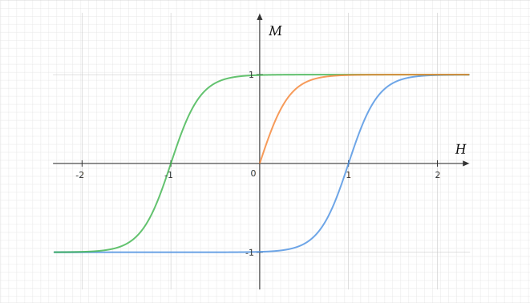
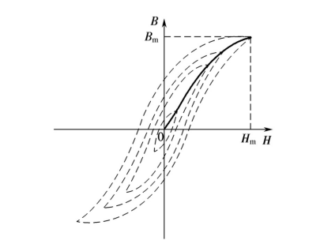
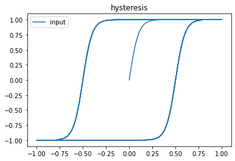

滞回曲线 Hysteresis
滞回现象表现在，在函数的输入/输入到达某一阈值之后，便不会再按照原先的路径返回。最常见的的有铁磁材料的磁滞现象。

如上图所示，在初始条件下，增大磁场强度，磁化强度 会沿橙色曲线变化；当达到某一阈值 之后，再缩小， 就会沿绿色曲线变化；当缩小到到某一阈值 之后，再增大， 就会沿蓝色曲线变化。如此周而复始。
数学模型
上面的函数并不能真实反映物理上的磁滞回线，具体表现在铁磁材料在被磁化中的表现总是不理想的；但是在平稳运行的系统中可以以上面的公式近似表示。真实的磁化过程应如下图所示（通过实验获得）：

Python 实现
在写代码之前，我们首先看一下需要哪些前提条件：
- 三个公式
- 两个阈值：
- 三个参数：
- 一个状态变量：
flag
下面是代码部分：
import numpy as np
import matplotlib.pyplot as plt
from math import tanh
def h0(h, k, beta, h0):
return k*tanh(beta*(h))
def h1(h, k, beta, h0):
return k*tanh(beta*(h-h0))
def h2(h, k, beta, h0):
return k*tanh(beta*(h+h0))
f = h0
flag = 0 # 初始过程，橙色曲线
m_max = 0.99
m_min = -0.99
def hysteresis(h, k, beta, h0):
global f
global flag
if flag == 1:
f = h1
elif flag == 2:
f = h2
m = f(h, k, beta, h0)
if m > m_max:
flag = 2
elif m < m_min:
flag = 1
return m
x = np.linspace(0,20, 1000)
y = np.sin(x)
hh = []
for yi in y:
hi = hysteresis(yi, 1,10,0.5)
hh.append(hi)
# hh = hysteresis(y, 1, 3, 1)
plt.plot(y, hh)
plt.legend(('input', 'output'))
plt.title('hysteresis')
plt.show()得到结果如下图所示：

需要注意的是，阈值与各种参数要配合得当，要写一个通用的库，还是不简单啊！
📅 2022-09-06 Aachen